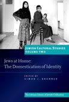

Jewish Cultural Studies, Volume 5
Mothers in the Jewish Cultural Imagination
Most Jews will feel intimately familiar with and attached to the figure of the ‘Jewish mother’, yet few have questioned representations of mothers and motherhood in Jewish culture. This volume aims to fill this gap by bringing to the fore the vast network of symbols and images which Jews have associated with mothers from the Bible to the modern period. It demonstrates the complex ways in which the Jewish mother has been used to construct and frame Jewish religion and culture.
More info
The ‘Jewish mother’ figure is a hallmark of Jewish culture, one which appears in the works of rabbis, artists, poets, and activists across time and place. While depictions of mothers and motherhood abound in Jewish writings, they vary significantly according to social context. These representations therefore offer important insights into the Jewish cultural imagination, and the ways in which writers resort to the figure of the Jewish mother to comprehend and construct their world.
The contributors to this volume highlight the complex network of symbols and images associated with Jewish mothers and motherhood as well as the vast array of social, historical, and cultural patterns that characterizations of mothers reflect. Each essay treats the topic from a specific perspective, spanning from mother--daughter relationships in the Talmud to depictions of mothers in twentieth-century American Jewish children’s literature. Collectively, they present a provocative examination of the ways mothers shape and problematize Jewish identity.
This volume seeks to give the figure of the mother a new and enhanced place at the heart of Judaism: not only as a central figure in family life, but also as a key agent in the transmission of Jewish religion and culture.
About the editors
Marjorie Lehman is Associate Professor of Talmud and Rabbinics at the Jewish Theological Seminary of America. She is the author of The En Yaaqov: Jacob ibn Habib's Search for Faith in the Talmudic Corpus (2012) and co-editor of Learning to Read Talmud: What It Looks Like and How It Happens (2016). The En Yaaquov was a finalist for the National Jewish Book Award-Nahum Sarna Memorial Award in the scholarship category. Her research in the field of Talmud and Rabbinics centers on four areas: Talmudic Aggadah, through a study of the sixteenth-century Ottoman collection of aggadic material, the En Yaaqov; Jewish gender studies, through a feminist commentary on Tractate Yoma, and a study of depictions of mothers in Jewish culture; the history of the Hebrew book, through the construction of a data base, Footprints, that weds research on the Jewish book with technological advances in the digital humanities; and the scholarship of teaching, through a focused study of how students learn to read and critically analyze rabbinic texts.
Jane L. Kanarek is Associate Professor of Rabbinics and Associate Dean of Academic Development and Advising at Hebrew College. She is the author of Biblical Narrative and the Formation of Rabbinic Law (2014) and co-editor of Learning to Read Talmud: What It Looks Like and How It Happens (2016). She received a Ph.D. in the History of Judaism from the University of Chicago where she was a recipient of a Wexner Graduate Fellowship. Her research interests center on three areas: legal theory and rabbinic exegesis, feminist interpretation of the Talmud, and the pedagogy of Talmudic literature. Her articles have appeared in AJS Review, Journal of Jewish Education, Nashim, and Teaching Theology and Religion, among other journals.
Simon J. Bronner is Distinguished University Professor of American Studies and Folklore at the Pennsylvania State University, Harrisburg, where he was founding director of the campus’s Holocaust and Jewish Studies Center. He has also taught at Harvard, Leiden (Netherlands), and Osaka (Japan) universities. He is the author and editor of over thirty-five books, including Youth Cultures in America (2016), Folklore: The Basics (2016), Greater Harrisburg’s Jewish Community (2011), Explaining Traditions: Folk Behavior in Modern Culture (2011), and Encyclopedia of American Folklife (2006). He edits the Material Worlds series for the University Press of Kentucky and has published in Jewish cultural studies in the Journal of Modern Jewish Studies, Jewish History, Yiddish, Markers, and Chuliyot: Journal of Yiddish Literature. As well as editing the Littman Library’s Jewish Cultural Studies series, he leads the Jewish Folklore and Ethnology section of the American Folklore Society. He has received the Kenneth Goldstein Award for Lifetime Academic Leadership, the Wayland D. Hand Prize in history and folklore, and the Peter and Iona Opie Prize in children’s culture from the American Folklore Society for his scholarly accomplishments.
About the contributors
Deena Aranoff, Assistant Professor of Medieval Jewish Studies, Graduate Theological Union, Berkeley
Carole Balin, Professor of History, Hebrew Union College-Jewish Institute of Religion, New York
Elisheva Baumgarten, Professor Yitzchak Becker Chair in Jewish Studies; associate professor, Departments of Jewish History and Department of History, Hebrew University of Jerusalem
Mara Benjamin, Associate Professor of Religion, St Olaf College, Minnesota
Simon J. Bronner, Distinguished University Professor of American Studies and Folklore, Pennsylvania State University, Harrisburg
Jodi Eichler-Levine, Philip and Muriel Berman Professor of Jewish Civilization and Associate Professor of Religion Studies, Lehigh University, Pennsylvania
Krisztina Frauhammer, member, Research Group of Religious Cultures, Hungarian Academy of Sciences, Budapest
Jane L. Kanarek, Associate Professor of Rabbinics and Associate Dean of Academic Development and Advising, Hebrew College, Massachusetts
Melissa Klapper, Professor of History, Rowan College, New Jersey
Sharon Koren, Associate Professor of Medieval Jewish Culture, Hebrew Union College-Jewish Institute of Religion, New York
Josh Lambert, Academic Director, Yiddish Book Center; Visiting Assistant Professor of English, University of Massachusetts, Amherst
Ruth Lamdan, Department of Jewish History and Goldstein-Goren Diaspora Research Center, Tel Aviv University
Moshe Lavee, Lecturer in Talmud and Midrash and co-chair, Center for Interdisciplinary Research of the Cairo Genizah, University of Haifa
Marjorie Lehman, Associate Professor of Talmud and Rabbinics, Jewish Theological Seminary of America
Dalia Marx, Associate Professor of Liturgy and Midrash, Jerusalem Campus, Hebrew Union College-Jewish Institute of Religion
Shana Strauch Schick, Post-Doctoral Fellow, Center for Interdisciplinary Research of the Cairo Genizah, University of Haifa
Emily Sigalow, Post-Doctoral Fellow, Department of Sociology, Brandeis University
Caryn Tamber-Rosenau, lecturer in Religious studies and Jewish studies, Vanderbilt University
Tsila Zan-Bar Tsur, researcher focusing on women's place in Jewish society in Afghanistan in the early-twentieth century
Miriam-Simma Walfish, doctoral student in ancient Judaism, Harvard University
Wendy Zierler, Sigmund Falk Professor of Modern Jewish Literature and Feminist Studies, Hebrew Union College-Jewish Institute of Religion, New York
Contents
Note on Transliteration
Introduction: Reimagining Jewish Mothers
Marjorie Lehman, Jane L. Kanarek, and Simon J. Bronner
Part 1 Idealized Mothers
Cooking, Cuddling, and Candle-Lighting: A Study of Motherhood and Mothering in Award-Winning Jewish Children’s Literature
Emily Sigalow
2 The Jewish Mother’s Prayer: Mothers in Late Nineteenth-Century Hungarian Jewish Women’s Prayer Books
Krisztina Frauhammer
3 Nene Mesl-e Nan—‘Mother is Like Bread’: The Perception of Motherhood and Folklore Expressions among the Jews of Afghanistan
Tsila Zan-Bar Tsur
4 Mothers and Children in Ottoman Jewish Society as Reflected in Hebrew Sources of the Sixteenth to Eighteenth Centuries
Ruth Lamdan
Part 2 Constructions and Contestations of Mothers
5 ‘Like Mother Like Daughter’: Mother-Daughter Relations in Babylonian Talmudic Stories
Moshe Lavee
6 The (Re)production of a Maskilah: The Mother-Daughter Bond between Menuhah and Hava Shapiro
Carole Balin and Wendy Zierler
7 Maurice Sendak’s Jewish Mother(s)
Jodi Eichler-Levine
8 The Jewish Mother as Metonym for Community in Postwar America
Josh Lambert
Part 3 Activist Mothers
9 The ‘Mothers’ Who Were Not: Motherhood Imagery and Childless Women Warriors in Early Jewish Literature
Caryn Tamber-Rosenau
10 Motherhood as Motivation: American Jewish Women in Action, 1890-1940
Melissa Klapper
11 Two Voices Heard in Castile: Rachel and Mary Weep for Their Children in the Age of the Zohar
Sharon Koren
12 ‘Where Was Sarah?’ Depictions of Mothers and Motherhood in Modern Israeli Poetry on the Binding of Isaac
Dalia Marx
Part 4 Re-embodying Mothers
13 Depictions of Childbirth in Rabbinic Literature: The Innovation of a Geniza Midrashic Text
Shana Strauch Schick
14 Upending the Curse of Eve: A Reframing of Maternal Breastfeeding in Bavli Ketubot
Miriam-Simma Walfish
15 The Biblical Root ’mn: Retrieval of a Term and Its Household Context
Deena Aranoff
Part 5 Recasting Mothers
16 Mothers and Ma’asim: Maternal Roles in Medieval Hebrew Tales
Elisheva Baumgarten
17 On Teachers, Rabbinic and Maternal Mara Benjamin
Notes on Contributors
Index
PRIZES
REVIEWS
408 pages
ISBN: 978-1-906764-66-1
£21.95 / $34.95
Publication April 2017
Jewish Cultural Studies:

Volume One: Jewishness: Expression, Identity, and Representation

Volume Two: Jews at Home: The Domestication of Identity

Volume Three: Revisioning Ritual: Jewish Traditions in Transition

Volume Four: Framing Jewish Culture: Boundaries and Representations
Volume Six: Connected Jews: Expressions of Community in Analogue and Digital Culture